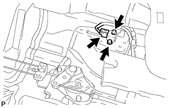
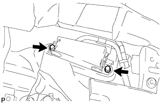

デセラレーション センサ（4WD） 取り付け |
| 1. デセラレーション センサ取り付け |
|  |
ボルト2本でデセラレーションセンサのコネクターを車両後方に向け、取り付ける。
デセラレーションセンサにコネクターを接続する。
| 2. センサ ブラケット取り付け |
|  |
ボルト2本でセンサブラケットを取り付ける。
| 3. フロントフロア カーペットASSY FR取り付け |
| 4. サイドNO.1 トリムASSY RH取り付け |
 |
クリップおよびツメをかん合させ、サイドNO.1トリムASSY RHを取り付ける。
| 5. リヤシート 3ポイントタイプ ベルトASSY OUT RH取り付け（フロアアンカ部） |
ボルトでリヤシート 3ポイントタイプ ベルトASSY OUT RH（フロアアンカ部）を締め付ける。
| 6. フロントシート アウタベルトASSY RH取り付け（フロアアンカ部） |
ボルトで、フロントシートアウタベルトASSY RHのフロアアンカ部を取り付ける。
| 7. リヤシートバック ヒンジSUB-ASSY RH取り付け |
 |
ボルトで、リヤシートバックヒンジRHを取り付ける。
| 8. ラップベルト アウタアンカ カバー取り付け |
 |
ツメのかん合を合わせ、ラップベルト アウタアンカ カバーを取り付ける。
| 9. フロントドア オープニングトリム ウェザストリップ RH取り付け |
 |
ウェザストリップのペイントマーク(白色、どちらか1箇所)を合わせ、フロントドアオープニングトリムウエザストリップRHを取り付ける。
| 10. カウルサイドトリム ボード RH取り付け |
 |
ツメおよびスタッドをかん合させ、カウルサイドトリムボードRHを取り付ける。
| 11. フロントドアスカッフ プレート RH取り付け |
 |
スカッフプレート前端部および後端部のツメをかん合させる。
ツメをかん合させ、フロントドアスカッフプレートRHを取り付ける。
| 12. リヤシートクッションASSY取り付け |
 |
シートベルトを通し、フックをかん合させる。
リヤシートクッションASSY前部のクリップをかん合させる。
| 13. リヤシートバツクASSY取り付け |
 |
リヤシートバックASSYを車両に乗せ、リヤシートバックフレームの穴とヒンジ側のロケーションを合わせボルト2本を仮付けする。
ボルト2本を本締めし、リヤシートバックASSYを取り付ける。
新品のクリップ2個を取り付ける。
| 14. フロントシートASSY RH取り付け |
シートトラックアジャスティングハンドルを操作してフロントシートASSYをスライドさせ、フロントモーストにする。
シートASSYを車両に乗せ、フロントシートレッグASSY RH部のピンと車両側の穴を合わせる。
車両側ワイヤハーネスとシート側ワイヤハーネスを接続させる。
ボルト2本でシートASSYのリヤ側を仮締めする。
シートトラックアジャスティングハンドルを操作してフロントシートASSYをスライドさせ、リヤモーストにする。
ボルト2本でシートASSYのフロント側を仮締めする。
シートトラックアジャスティングハンドルを操作してフロントシートASSYをスライドさせ、フロントモーストにする。
シートASSYのリヤ側のボルト2本ををインナ→アウタの順に締め付ける。
シートトラックアジャスティングハンドルを操作してフロントシートASSYをスライドさせ、リヤモーストにする。
シートASSYのフロント側のボルト2本をインナ→アウタの順に締め付ける。
フロントシートレッグカバーのツメをかん合させる。
| 15. スライドアジャスターロック同期点検 |
スライド操作したとき、左右のアジャスターが同時にロックすることを点検する。
| 16. バッテリマイナスターミナル接続 |
| 17. テストモード点検(デセラレーションセンサチェック)点検 |
参照)